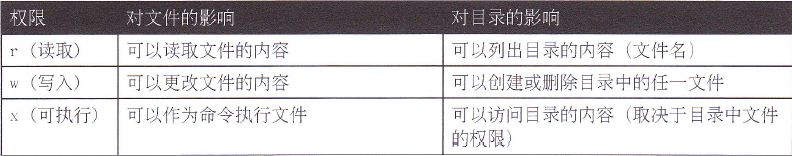

Index
- DNS基本概念
- Master: 正向区/反向区
- Slave: 正向区/反向区
- DNS区域传输限制
- 根提示区、Forward
- Client使用DNS解析
- 扩展： 子域授权
- 扩展： DNS Round Robin
- Puppet简介
- Puppet部署
- 实例：File资源
- 实例：创建模块test1
- 实例：创建模块httpd
- Puppet命名规范
- Puppet资源
- 资源的依赖关系
- notify subscribe
- Puppet部署Nginx
- Puppet部署MySQL
- Master自动签发证书
- Puppet Dashboard
- Puppet Git
- Puppet Cobbler
文件基本权限（1）
====文件权限====文件权限管理之一： 基本权限(r、w、x)
rw-r--r-- alice hr install.log
权限对象：
属主： u
属组： g
其他人: o
权限类型：
读：r 4
写：w 2
执行: x 1
===设置权限
1. 更改文件的属主、属组
=chown：
[root@tianyun ~]# chown alice.hr file1 //改属主、属组
[root@tianyun ~]# chown alice file1 //只改属主
[root@tianyun ~]# chown .hr file1 //只改属组
=chgrp：
[root@tianyun ~]# chgrp it file1 //改文件属组
[root@tianyun ~]# chgrp -R it dir1 //改文件属组 -R 递归 表明属组内的所有成员继承组的属性
2. 更改权限
=a. 使用字符
对象 赋值符 权限类型
u + r
chmod g - w
o = x
a
[root@tianyun ~]# chmod u+x file1 //属主增加执行
[root@tianyun ~]# chmod a=rwx file1 //所有人等于读写执行
[root@tianyun ~]# chmod a=- file1 //所有人没有权限
[root@tianyun ~]# chmod ug=rw,o=r file1//属主属组等于读写，其他人只读
[root@tianyun ~]# ll file1 //以长模式方式查看文件权限
-rw-rw-r-- 1 alice it 17 10-25 16:45 file1 //显示的结果
=b. 数字
[root@tianyun ~]# chmod 644 file1
[root@tianyun ~]# ll file1
-rw-r--r-- 1 alice it 17 10-25 16:45 file1
===设置权限示例
针对hr部门的访问目录设置权限，要求如下：
1. root用户和hr组的员工可以读、写、执行
2. 其他用户没有任何权限
[root@tianyun ~]# groupadd hr
[root@tianyun ~]# useradd hr01 -G hr
[root@tianyun ~]# useradd hr02 -G hr
[root@tianyun ~]# mkdir /home/hr
[root@tianyun ~]# chgrp hr /home/hr
[root@tianyun ~]# chmod 770 /home/hr
[root@tianyun ~]# ll -d /home/hr/
drwxrwx---. 2 root hr 4096 3月 13 14:26 /home/hr/
=================================================================
小知识： r、w、x权限对文件和目录的意义

＝＝测试1：alice用户对目录没有写权限
[root@tianyun ~]# mkdir /home/test
[root@tianyun ~]# vim /home/test/file1
[root@tianyun ~]# chmod 777 /home/test/file1
[alice@tianyun ~]$ rm -rf file1
rm: cannot remove `file1': Permission denied
＝＝测试2：alice用户对目录有写权限
[root@tianyun ~]# chmod 777 /home/test
[root@tianyun ~]# chmod 000 /home/test/file1
[alice@tianyun ~]$ cd /home/test
[alice@tianyun test]$ ll
----------. 1 root root 3 Mar 13 14:45 file1
[alice@tianyun test]$ cat file1
cat: file1: Permission denied
[alice@tianyun test]$ rm -rf file1
[alice@tianyun test]$ touch file2
[alice@tianyun test]$ mkdir dir2
=================================================================
文件权限管理之二： 特殊权限
suid 4
sgid 2
sticky 1
设置特殊权限
a、字符
chmod u+s file
chmod g+s file
chmod g+s dir
chmod o+t dir
b、数字
chmod 7777 file
chmod 2770 dir
chmod 3770 dir
示例1：suid 普通用户通过suid提权 对二进制文件设置有意义 通过设置可以使普通用户执行root用户才能执行的动作
[root@yangs ~]# chmod u+s /bin/cat
[alice@yangs ~]$ cat /root/install.log
示例2：sticky 用户只能删除自己的文件 只对公共目录（目录权限o有rw）设置有意义 目录中的文件只有属主才能删除 chmod o+t
[root@yangs ~]# groupadd sale
[root@yangs ~]# useradd sale01 -G sale
[root@yangs ~]# useradd sale02 -G sale
[root@yangs ~]# id sale01
uid=5006(sale01) gid=5006(sale01) groups=5006(sale01),508(sale)
[root@yangs ~]# id sale02
uid=5007(sale02) gid=5007(sale02) groups=5007(sale02),508(sale)
[root@yangs ~]# mkdir /home/sale
[root@yangs ~]# chgrp sale /home/sale
[root@yangs ~]# chmod 770 /home/sale
[root@yangs ~]# chmod o+t /home/sale
[root@yangs ~]# ll -d /home/sale
drwxrwx--T 2 root sale 4096 09-02 02:26 /home/sale
示例3：sgid sticky 用户只能删除自己的文件、新建文件继承属组 新文件的属组状态继承本目录的属组 对目录设置有意义
[root@yangs ~]# chmod 3770 /home/sale chmod g+s
[root@yangs ~]# ll -d /home/sale
drwxrws--T 2 root sale 4096 09-02 02:26 /home/sale
=================================================================
小知识：注意以下目录的正确权限，否则会导致程序不能正常运行
[root@wangcy ~]# ll -d /tmp /var/tmp/
drwxrwxrwt 14 root root 4096 07-26 10:15 /tmp
drwxrwxrwt 2 root root 4096 07-24 19:02 /var/tmp/
=================================================================
文件权限管理之三： umask
umask： 新建文件、目录的默认权限是由umask决定的
root: 文件 644 umask: 0022
目录 755
普通用户：文件 664 umask: 0002
目录 775
[root@tianyun ~]# umask //查看当前用户的umask权限
0022
[root@tianyun ~]# umask -S
u=rwx,g=rx,o=rx
[root@tianyun ~]# umask 000 //设置umask权限
[root@tianyun ~]# umask
0000
[root@tianyun ~]# touch file8 //创建file8文件
[root@tianyun ~]# mkdir dir8 //创建目录
[root@tianyun ~]# ll -d dir8 file8 //查看文件目录权限
drwxrwxrwx 2 root root 4096 10-26 14:10 dir8
-rw-rw-rw- 1 root root 0 10-26 14:10 file8
[root@tianyun ~]# umask 022
[root@tianyun ~]# umask
0022
==============================================================
小知识：
[root@tianyun ~]# umask 077; touch file60 //当前shell生效
[root@tianyun ~]# (umask 077; touch file70) //()表示在子shell生效 sub shell 只针对之后的操作
[root@tianyun ~]# ll file70
-rw------- 1 root root 0 10-26 14:31 file70
[root@tianyun ~]#
[root@tianyun ~]# umask
0022
==============================================================